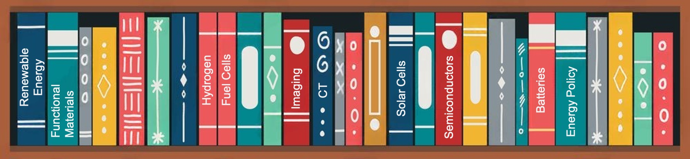

نظرة عامة على البحث
نظام طاقة منخفض الكربون موجه نحو الشبكة يدمج الهيدروجين والكهرباء

المنشورات
- الطاقة المتجددة / الكيمياء الكهربائية:
-
S. N. Artigas, H. Xu* [FDB], F. Mack
Use of distribution of relaxation times analysis as an in-situ diagnostic tool for water management in PEM fuel cells applications [J]
استخدام تحليل توزيع أوقات الاسترخاء كأداة تشخيص في الموقع لإدارة المياه في تطبيقات خلايا الوقود PEM
Collaboration:[Freudenberg Group, Germany] | Cited by:[Tsinghua University]
2024 | J. Power Sources [PDF] -
H. Xu* [PSI], M. Bührer, F. Marone, Prof. T. J. Schmidt, F. N. Büchi, J. Eller
Effects of gas diffusion layer substrates on PEFC water management: Part II. In situ liquid water desaturation via evaporation [J]
تأثيرات الركائز في طبقة انتشار الغاز على إدارة المياه في PEFC: الجزء الثاني. إزالة تشبع المياه السائلة في الموقع عبر التبخر
Collaboration:[Swiss Light Source/PSI] | Cited by:[Toyota Motor Corporation] [Bosch, Germany]
2022 | J. Electrochem. Soc. [PDF] -
S. van Rooij, M. Magnini, A. Mularczyk, H. Xu* [PSI], F. N. Büchi [PSI], Prof. S.
Haussener
[EPFL]
Conductive heat transfer in partially saturated gas diffusion layers with evaporative cooling [J]
انتقال الحرارة الموصل في طبقات انتشار الغاز المشبعة جزئيًا مع التبريد بالتبخر
Collaboration:[Swiss Light Source/PSI] [EPFL]
2022 | J. Electrochem. Soc. [PDF] -
H. Xu* [PSI], S. Nagashima [Toyota], H. Nguyen, K. Kishita, F. Marone, F. N. Büchi, J.
Eller
[PSI]
Temperature dependent water transport mechanism in PEFC gas diffusion layers revealed by subsecond operando X-ray tomographic microscopy [J]
آلية نقل المياه المعتمدة على درجة الحرارة في طبقات انتشار الغاز PEFC المكتشفة بواسطة الميكروسكوبيات الشعاعية الفراغية السريعة
Collaboration:[Toyota Motor Corporation] | Cited by:[Bosch, Germany] [Tsinghua University] [University of Toronto]
2021 | J. Power Sources [PDF] -
H. Xu* [PSI], M. Bührer, F. Marone, Prof. T. J. Schmidt [ETH], F. N. Büchi, J. Eller
[PSI]
Effects of gas diffusion layer substrates on PEFC water management: Part I. Operando liquid water saturation and gas diffusion properties [J]
تأثيرات الركائز في طبقة انتشار الغاز على إدارة المياه في PEFC: الجزء الأول. التشبع السائل في الموقع وخصائص انتشار الغاز
Collaboration:[Swiss Light Source/PSI] | Cited by:[German Aerospace Center] [Toyota Motor Corporation] [Tsinghua University]
2021 | J. Electrochem. Soc. [PDF] -
C. Csoklich, H. Xu* [PSI], F. Marone, Prof. T. J. Schmidt [ETH], F. N. Büchi [PSI]
Laser Structured Gas Diffusion Layers for Improved Water Transport and Fuel Cell Performance [J]
طبقات انتشار الغاز المهيكلة بالليزر لتحسين نقل المياه وأداء خلايا الوقود
Collaboration:[Swiss Light Source/PSI] | Cited by:[Tokyo Institute of Technology] [Hong Kong University of Science and Technology] [Tsinghua University]
2021 | ACS Appl. Energy Mater. [PDF] -
Y. Nagai [Toyota], J. Eller, T. Hatanaka, S. Yamaguchi, S. Kato, F. Marone, H. Xu*
[PSI], F. N.
Büchi
Improving water management in fuel cells through microporous layer modifications: Fast operando tomographic imaging of liquid water [J]
تحسين إدارة المياه في خلايا الوقود من خلال تعديلات طبقات المسام الدقيقة: التصوير الطوبوغرافي السريع للمياه السائلة
Collaboration:[Toyota Motor Corporation] | Cited by:[MIT] [German Aerospace Center] [State Power Investment Corporation, China]
2019 | J. Power Sources [PDF]
- التصوير الحاسوبي / التعلم العميق
-
M. Bührer, H. Xu* [PSI], A. Hendriksend, F. N. Büchi, J. Eller, Prof. M. Stampanoni
[ETH], F.
Marone [SLS]
Deep learning based classification of dynamic processes in time-resolved XTM [J]
تصنيف العمليات الديناميكية باستخدام التعلم العميق في تقنيات XTM المؤقتة
Co-author:[Swiss Light Source/PSI] [CWI Amsterdam] | Cited by:[Stanford Univ.] [RWTH Aachen]
2021 | Scientific Reports [PDF] -
M. Bührer, H. Xu* [PSI], J. Eller, Prof. J. Sijbers, Prof. M. Stampanoni [ETH], F.
Marone [SLS]
Unveiling water dynamics in fuel cells from time-resolved tomographic microscopy data [J]
كشف ديناميكيات المياه في خلايا الوقود من بيانات الميكروسكوب التوموغرافي المؤقت
Co-author:[Swiss Light Source/PSI] [Univ. of Antwerp] | Cited by:[Univ. of Tokyo] [Univ. of Toronto]
2021 | Scientific Reports [PDF] -
H. Xu* [PSI], M. Bührer, F. Marone, Prof. T. J. Schmidt [ETH], F. N. Büchi, J. Eller
[ETH]
Optimal image denoising for operando XTM of liquid water in PEFC gas diffusion layers. [J]
تحسين إزالة الضوضاء في الصور لتقنية XTM أثناء العمل لمياه سائلة في طبقات انتشار الغاز في PEFC
Co-author:[Swiss Light Source/PSI] | Cited by:[CAS Dalian Institute of Chemical Physics] [Univ. of Toronto] [Univ. College London]
2020 | J. Electrochem. Soc. [PDF] -
H. Xu* [PSI], F. Marone, S. Nagashima, H. Nguyen, K. Kishita, F. N. Büchi, J. Eller
(Invited) Exploring sub-second and sub-micron XTM imaging of liquid water in PEFC GDLs. [J]
استكشاف التصوير XTM للمياه السائلة في GDLs في PEFC بسرعة أقل من ثانية وأقل من ميكرون
Co-author:[Swiss Light Source/PSI] [TOYOTA] | Cited by:[European Synchrotron Radiation Facility] [US National Fuel Cell Research Center] |[ECS Meeting Travel Award]
2019 | ECS Transactions [PDF] -
H. Xu* [PSI], M. Bührer, F. Marone, Prof. T. J. Schmidt [ETH], F. N. Büchi, J. Eller
[PSI]
Fighting the noise: towards the limits of subsecond X-ray tomographic microscopy of PEFC. [J]
محاربة الضوضاء: نحو حدود الميكروسكوبية التوموغرافية بالأشعة السينية ذات المدى الفرعي الثاني في PEFC
Co-author:[Swiss Light Source/PSI] | Cited by:[Argonne National Laboratory] [TOYOTA] |[Swiss Light Source] |[ModVal Best Poster Award]
2017 | ECS Transactions [PDF]
- علوم المواد / الهندسة الكيميائية
-
Prof. H. Zhang, R. Wu, H. Xu* [BJTU], F. Li, S. Wang, J. Wang [BJUT], T. Zhang
A simple spray reaction synthesis and characterization of hierarchically porous SnO2 microspheres for an enhanced dye sensitized solar cell. [J]
Translation: التحضير البسيط لطبقة من الكرات المجهرية المسامية من SnO2 باستخدام تقنية الرش وتوصيفها لخلايا الطاقة الشمسية المحسنة باستخدام الصبغة
2017 | RSC Advances [PDF][BJTU] -
Prof. H. Zhang [BJTU], H. Xu* [BJTU], J. Wan, Prof. L. Yan, C. Dai
Preparations of new porous oxides spherical powders by spray reaction technique. [J]
Translation: تحضير مسحوق أكاسيد مسامية كروية جديدة باستخدام تقنية التفاعل بالرش
2012 | Vacuum and Cryogenics [Link][BJTU] -
Q. Xiaoyue, H. Xu* [BJTU], X. Zhou
Degradation of highly active cypermethrin via ultrasonic irradiation combined with photocatalysis by TiO2
Translation: تحلل السيبرمثرين عالي النشاط عبر الإشعاع بالموجات فوق الصوتية المدمجة مع التحفيز الضوئي باستخدام TiO2
2012 | Chemistry Research [Link][BJTU]
براءات الاختراع
-
Annular gas-liquid interface jigging magnetic separation device [P]
جهاز الفصل المغناطيسي باستخدام الاهتزاز عند واجهة الغاز-السائل الحلقية [براءة اختراع]
Inventors: Prof. M. Fu, Prof. H. Zhang, H. Xu (BJTU), Prof. L. Yan
Chinese Patent No.: CN102441489B, Granted on Oct 11, 2013. [Grant] -
Continuously operating annular gas-liquid interface jigging magnetic separation device
[P]
جهاز الفصل المغناطيسي باستخدام الاهتزاز عند واجهة الغاز-السائل الحلقية يعمل باستمرار [براءة اختراع]
Inventors: Prof. H. Zhang, H. Xu (BJTU), Prof. M. Fu, Prof. L. Yan
Chinese Patent No.: CN102441490A, Granted on Nov 1, 2013. [Grant] -
Ultrasonic-photocatalytic oxidation coupled fruit and vegetable cleaning device
[P]
جهاز تنظيف الفواكه والخضروات باستخدام التحفيز الضوئي والأكسدة بالموجات فوق الصوتية [براءة اختراع]
Inventors: X. Zhou, H. Xu (BJTU), Prof. H. Jiang, X. Qi
Chinese Patent No.: CN202311136U, Granted on May 9, 2012. [Grant]
التقارير الفنية
-
H. Xu [TUM], Dr. B. Vinçon-Leite, Y. Luo
Modelling of Cyanobacteria Dynamics for YuQiao Reservoir in Tianjin, China [R]
نمذجة ديناميكيات السيانوبكتيريا لخزان يو تشياو في تيانجين، الصين [تقرير]
2016 | تقرير تدريب.[École des Ponts ParisTech] &[École Polytechnique] . باريس، فرنسا. -
H. Xu [UR1], Dr. W. Lu, Dr. A. Madsen, Prof. S. Di Matteo
Design and Construction of a Test-Stand for the Split and Delay Line at the European XFEL [R]
تصميم وبناء محطة اختبار لخط التقسيم والتأخير في المركز الأوروبي للأشعة السينية [تقرير]
2015 | تقرير تدريب.[European XFEL] ، هامبورغ، ألمانيا. [PDF]
البحث في الأسهم
- البحث الصناعي الكلي (منطقة الصين الكبرى):
2022 | صناعة الطاقة الجديدة: القوى الدافعة لريادة الأعمال في صناعة الطاقة الجديدة في الصين تحت سياسة الكربون المزدوج
2020 | صناعة المواد الجديدة: سلسلة المواد شبه الموصلة الجزء 4: 5G تقود سلسلة صناعة الاتصالات البصرية، المواد الفسفورية الإنديوم مستعدة للنمو
- البحث في السوق الأولية (الشركات الممولة من الفئة A إلى D):
2021 | تكنولوجيا UISEE: تقرير سلسلة الرواد في التكنولوجيا عن UISEE Technology: مزود حلول القيادة الذاتية متعددة السيناريوهات
2021 | تكنولوجيا SemiDrive: تقرير سلسلة الرواد في التكنولوجيا عن SemiDrive Technology: مزود شرائح المركبات الذكية
2021 | شركة Xian ESWIN لأشباه الموصلات: تقرير التحليل البحثي عن شركة Xian ESWIN لأشباه الموصلات
- البحث في السوق الثانوية (الشركات المدرجة في A-Share والأسواق الأمريكية):
2021 | صناعة السيليكون الوطنية (688126.SH): رائد في صناعة رقائق السيليكون الكبيرة يقود التوطين للرقائق (تقرير التغطية الأولية)
2021 | CREE (NASDAQ:CREE): تقرير سلسلة الرواد في التكنولوجيا عن CREE: مزود عالمي لأجهزة الطاقة/ RF و LED (سهم أمريكي)
2021 | Jingwei Hirain (688326.SH): تقرير سلسلة الرواد في التكنولوجيا عن Jingwei Hirain Technology: مزود نظام تكنولوجيا الإلكترونيات السيارات
2020 | TankeBlue (870013.OC): الشركة الرائدة المحلية في تصنيع رقائق SiC
2020 | هوانغزو لي-أون للإلكترونيات الدقيقة (605358.SH): سوق واسعة لاستبدال المنتجات المحلية، التصنيع الصناعي لرقائق السيليكون الكبيرة وشيك
2020 | شاندونغ سينوسيرا (300285.SZ): صناعة المواد الخزفية للأسنان، الاتجاهات المواتية لمواد الزركونيا
مجموعات البيانات العامة
-
TomoBank: مجموعة بيانات تصوير الأشعة السينية لخلايا الوقود
القيمون: م. بويرر، H. Xu* [PSI]، ف. مارون
2019 | وزارة الطاقة الأمريكية - مختبر آرغون الوطني © حقوق الطبع والنشر. Rev. f4253f55. [رابط]
مساعد تدريس
-
تقنيات الطاقة المتجددة II، تخزين وتحويل الطاقة
ETH زيورخ، دورة الماجستير (529-0191-01L )
2017-2019 | الفصل الدراسي الربيعي [رابط]
المؤتمرات
- الكيمياء الكهربائية / الفيزياء / علوم المواد:
-
H. Xu [PSI]، م. بويرر، ف. مارون، ت. ج. شميت، ف. ن. بوشي، ج. إيلر
تأثير توزيع حجم المسام على تشبع السوائل في طبقة توزيع الغاز أثناء العمل.
2019 | الاجتماع 236 لجمعية الكيمياء الكهربائية (ECS)، أتلانتا، الولايات المتحدة الأمريكية. [متحدث] [رابط] -
H. Xu [PSI]، م. بويرر، ف. مارون، ت. ج. شميت، ف. ن. بوشي، ج. إيلر
التقدم في تصوير الأشعة السينية التوموغرافي عند 10 هرتز للمياه في طبقات توزيع الغاز في خلايا الوقود البوليمرية أثناء العمل.
2018 | المؤتمر الدولي الثامن حول أساسيات وتطوير خلايا الوقود (FDFC)، نانت، فرنسا. [متحدث] [رابط] -
H. Xu [PSI]، م. بويرر، ف. مارون، ت. ج. شميت، ف. ن. بوشي، ج. إيلر
دراسات توزيع المياه في طبقة توزيع الغاز لخلايا الوقود البوليمرية باستخدام ميكروسكوبية الأشعة السينية التوموغرافية
2018 | الاجتماع السنوي التاسع والستين للجمعية الدولية للكيمياء الكهربائية (ISE)، بولونيا، إيطاليا. [ملصق] [رابط] -
H. Xu [PSI]، م. بويرر، ف. مارون، ت. ج. شميت، ف. ن. بوشي، ج. إيلر
توزيع المياه في طبقة توزيع الغاز لخلايا الوقود البوليمرية: دراسات ميكروسكوبية الأشعة السينية التوموغرافية
2018 | الندوة الخامسة عشر حول نمذجة خلايا الوقود والتحقق التجريبي (ModVal)، آرو، سويسرا. [أفضل ملصق] [رابط] -
H. Xu [PSI]، م. بويرر، ف. مارون، ت. ج. شميت، ف. ن. بوشي، ج. إيلر
تحديد قابلية الكشف عن الميزات لميكروسكوبية الأشعة السينية التوموغرافية الفرعية الثانية لخلايا الوقود البوليمرية.
2017 | المنتدى الأوروبي السادس لخلايا الوقود والإلكتروليزر (EFCF)، لوتسيرن، سويسرا. [متحدث] [رابط] -
H. Xu [PSI]، م. بويرر، ف. مارون، ت. ج. شميت، ف. ن. بوشي، ج. إيلر
تقييم نسبة التباين إلى الضوضاء لتصوير الأشعة السينية المحوسب للمياه في خلايا الوقود البوليمرية
2017 | الندوة الرابعة عشر حول نمذجة خلايا الوقود والتحقق التجريبي (ModVal)، كارلسروه، ألمانيا. [ملصق] [رابط] -
H. Xu [TUM]، إ. متوالي، ب. مولر-بوشباوم
البوليمرات الثنائية المستجيبة للحرارة المدمجة بالجسيمات النانوية لتطبيقات المستشعرات المغناطيسية.
2016 | الاجتماع السنوي لمشروع EU Erasmus MaMaSELF، جبل ريجي، سويسرا. [متحدث] [رابط] -
H. Xu [TUM]، إ. متوالي، ب. مولر-بوشباوم
الخصائص المغناطيسية والبنية للجسيمات النانوية بوليستايرين-بلوكة بولي (N-إيزوبروبيل أكريلاميد) / أكسيد الحديد.
2016 | الاجتماع السنوي الثمانون للجمعية الفيزيائية الألمانية & اجتماع DPG الربيعي (DPG)، ريغنسبورغ، ألمانيا. [ملصق] [رابط] -
H. Xu [BJTU]، بروف. هـ. تشانغ، ر. وو
كريات المسام الكبيرة SnO2: التحضير والتوصيف والتطبيق في خلايا الشمس الحساسة للأصباغ والمحركات الليثيوم.
2013 | ندوة الجسيمات الطاقية في جامعة تسينغوا، بكين، الصين. [ملصق] [رابط]